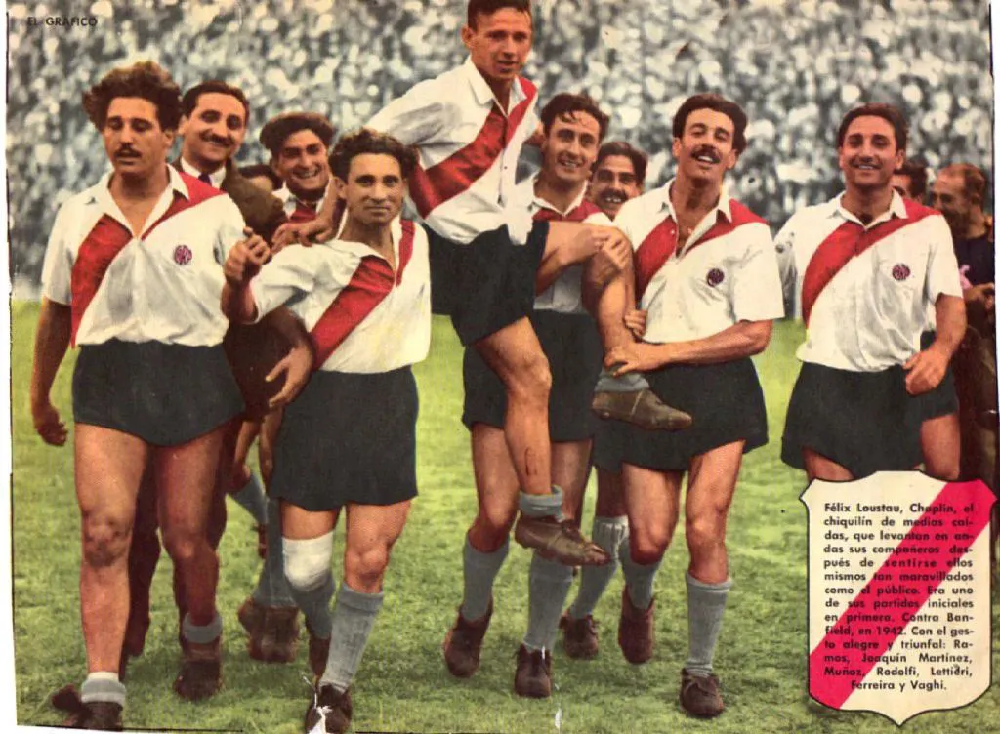

Década de 1940
Entre 1941 y 1947, River Plate presentó al mundo uno de los equipos más brillantes de la historia del fútbol, apodado "La Máquina" por su juego preciso, colectivo y abrumadoramente ofensivo.
El periodista Borocotó del diario El Gráfico bautizó al equipo como "La Máquina" tras una goleada 6-2 a Chacarita Juniors en 1942, destacando su funcionamiento perfecto y sincronizado como un reloj suizo.
Arquero seguro y líder defensivo
Latera derecho de gran proyección
Goleador histórico (293 goles)
Cerebro táctico del equipo
Extremo derecho veloz y técnico
Extremo izquierdo de gran calidad
Considerado el mejor jugador de la época
La Máquina innovó con:
Durante su época dorada, La Máquina obtuvo:
La Máquina sentó las bases del estilo riverplatense: fútbol vistoso, ofensivo y de calidad técnica. Su influencia perdura en la identidad del club y es referencia obligada al hablar de los grandes equipos de la historia del fútbol.
El equipo legendario (2020)